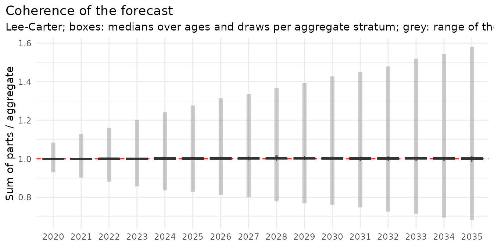
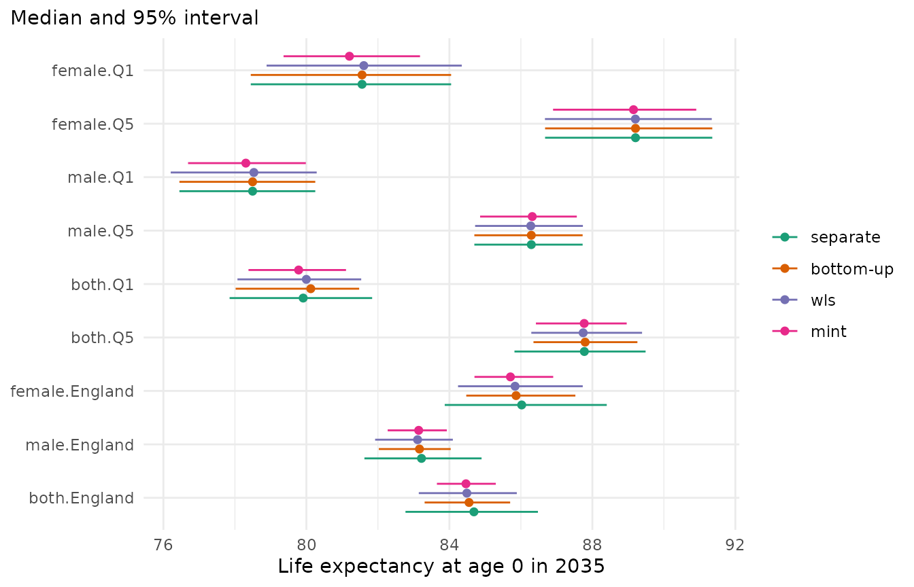

Forecasts are often needed at several levels: for groups (here sex by deprivation quintile), for their totals (each sex, each quintile) and for the whole population. Forecasts made separately for each level do not add up: the deaths forecast for England differ from the sum of the deaths forecast for its parts. This vignette shows why, the two ways to coherent forecasts, and how to keep a total that is trusted more than its parts. The model is Lee-Carter, as a simple example; every model works the same way.
library(mortensor)
library(data.table)
x <- mt_data(deaths = ons_data, population = ons_data, by = c("sex", "imd_decile"), age = "age_group",
value = c(deaths = "all_causes", population = "population"))
x <- mt_as_exposure(x, type = "midyear")
x <- mt_group_levels(x, "imd_decile", function(d) paste0("Q", ceiling(as.numeric(d) / 2)), name = "quintile")The hierarchy
mt_hierarchy() describes how the strata add up: the
quintiles to England, the sexes to both sexes.
mt_aggregate_strata() adds the totals to the data, by
summing deaths and exposures:
h <- mt_hierarchy(sex = "both", quintile = list(total = "England"))
xa <- mt_aggregate_strata(x, h)
mt_strata(xa, h)[, .N, by = level]
#> level N
#> <char> <int>
#> 1: bottom 10
#> 2: aggregate 7
#> 3: total 1Ten bottom series (sex by quintile) and eight totals: five quintiles for both sexes, the two sexes for England, and England.
Separate forecasts do not add up
One Lee-Carter model for each of the 18 strata:
fc_base <- mt_forecast(mt_fit(lee_carter(), xa), to = 2035, n_draws = 500, seed = 1)
mt_plot_coherence(fc_base, h)
The figure shows, for every total and year, the ratio of the sum of the parts to the forecast of the total. In the median the two agree within a few per cent, but the paths do not: the model of England and the models of its parts draw their futures independently, so a path of England has no matching paths of its parts.
Two ways to coherent forecasts
-
Bottom-up: forecast only the bottom series and add
them up. The totals are then sums by construction
(
method = "bottom_up"). -
Reconciliation: forecast every stratum, then adjust
all forecasts, path by path, so that they add up. The methods differ in
which strata absorb the adjustment:
"wls"moves each stratum in proportion to the uncertainty of its forecast,"mint"also uses how the strata move together (Wickramasuriya et al. 2019),"ols"moves all strata by the same number of deaths, and"structural"moves the totals more than the bottom series.
mt_reconcile() applies a method to forecasts;
reconciled() makes it part of a model, so that backtests
reconcile at each origin.
fc <- list(separate = fc_base,
"bottom-up" = mt_reconcile(fc_base, h, method = "bottom_up"),
wls = mt_reconcile(fc_base, h, method = "wls", seed = 1),
mint = mt_reconcile(fc_base, h, method = "mint", seed = 1))
mt_plot_compare(fc, periods = 2035, strata = c("female.Q1", "female.Q5", "male.Q1", "male.Q5", "both.Q1",
"both.Q5", "female.England", "male.England", "both.England"))
Life expectancy at birth in 2035 for some of the strata. The medians move little; the intervals change more. Sums of parts whose paths are only partly dependent vary less than the totals’ own models, so the totals get narrower intervals under every method; MinT narrows them most.
Keeping a trusted total
Sometimes one stratum is trusted more than the others: an official
projection of the total population, or an all-cause forecast that the
causes of death must add up to. fixed keeps such strata
unchanged in every path, and the others absorb the whole adjustment.
With "wls" the most uncertain parts absorb it; with
"proportional" all parts are scaled in proportion to their
own forecasts (top-down allocation, Athanasopoulos et al. 2009), which
keeps their composition and never sets a part to zero:
fixed <- list(separate = fc_base,
"wls, England fixed" = mt_reconcile(fc_base, h, method = "wls", fixed = "total", seed = 1),
"proportional, England fixed" = mt_reconcile(fc_base, h, method = "proportional", fixed = "total",
seed = 1))
mt_compare_forecasts(fixed, periods = 2035, strata = c("both.England", "female.England", "female.Q1", "male.Q5"),
digits = 2)
#> Key: <label, period>
#> label period separate wls, England fixed
#> <char> <num> <char> <char>
#> 1: both.England 2035 84.69 (82.77-86.48) 84.69 (82.77-86.48)
#> 2: female.England 2035 86.02 (83.87-88.40) 86.02 (83.73-88.45)
#> 3: female.Q1 2035 81.56 (78.44-84.05) 81.92 (78.20-85.38)
#> 4: male.Q5 2035 86.29 (84.70-87.73) 86.22 (84.74-87.96)
#> proportional, England fixed
#> <char>
#> 1: 84.69 (82.77-86.48)
#> 2: 86.02 (83.94-88.16)
#> 3: 81.85 (78.03-84.80)
#> 4: 86.23 (84.60-88.15)England keeps the life expectancy of its own model; its parts move towards it.
Does coherence cost accuracy?
A backtest from the origins 2010-2014, five years ahead, with the reconciliation inside each fit:
bt <- mt_compare(list(separate = lee_carter(),
"bottom-up" = reconciled(lee_carter(), h, method = "bottom_up"),
wls = reconciled(lee_carter(), h, method = "wls"),
mint = reconciled(lee_carter(), h, method = "mint")),
xa, origins = 2010:2014, h = 5, n_draws = 200)
mt_score_table(bt, metrics = c("crps", "cov95"), hierarchy = h)
#> model level crps cov95
#> <fctr> <fctr> <num> <num>
#> 1: separate bottom 0.0665 0.836
#> 2: separate aggregate 0.0540 0.820
#> 3: separate total 0.0439 0.746
#> 4: bottom-up bottom 0.0665 0.834
#> 5: bottom-up aggregate 0.0550 0.718
#> 6: bottom-up total 0.0454 0.530
#> 7: wls bottom 0.0667 0.839
#> 8: wls aggregate 0.0549 0.724
#> 9: wls total 0.0447 0.552
#> 10: mint bottom 0.0666 0.803
#> 11: mint aggregate 0.0551 0.677
#> 12: mint total 0.0458 0.514hierarchy = h scores the bottom series (sex by
quintile), the aggregates (quintiles for both sexes, England by sex) and
the total (England) separately.
The bottom series are forecast about as well with every method. The
totals lose a little accuracy and more coverage: their own models
capture common movements of the quintiles in their trends, which sums of
parts reproduce only as far as the dependence between the parts is
reproduced. By default, reconciled() reorders the paths of
separately fitted parts so that they move together as they did in the
training years (dependence = "empirical", Clark et
al. 2004); joint models such as li_lee() tie the parts
together in the model itself.
Reconciliation learnt from past forecasts
The methods above fix in advance how forecasts are adjusted.
Score-optimal reconciliation (Panagiotelis et al. 2023) learns the
adjustment from the base model’s own forecasts of past years instead:
reconciled() with method = "energy_score"
refits the base model at n_origins inner origins within the
last years of the training data, and estimates for each age
a correction d and a projection G of the base
draws that minimise the energy score of these forecasts, a multivariate
CRPS of all strata together. The reconciled draws
S (d + G y) add up by construction.
so <- reconciled(lee_carter(), h, method = "energy_score", years = 6, n_origins = 5, horizon = 3)
fit <- mt_fit(so, xa)
fit$reconcile$scoreopt$table # in-sample energy score with OLS and after the optimisationEach fit takes about 20 seconds on these data, so the code is not run
here. In a backtest from 2011 to 2014 (validation check
scoreopt_ons), the method was less accurate than WLS at
every level: CRPS 22% higher for the bottom series, 26% for the
aggregates and 32% for England. The training forecasts were too high in
2006-2011 and the correction learnt from them pushed the forecasts down,
while mortality improvement stalled after 2011. With few, overlapping
training forecasts and one parameter per pair of strata at each age, the
method follows the errors of the training years; it suits long and
stable histories, and a backtest should confirm it.
Choosing a method
- Bottom-up with a joint model of the parts keeps the detailed forecasts and needs no forecasts of the totals.
- WLS is a robust default for reconciling separate forecasts; MinT gives the narrowest intervals, which a backtest should confirm.
- fixed with proportional for a trusted total, for example causes of death that must add up to an all-cause forecast.
- energy_score only with long training histories, after a backtest against WLS.
- Check the choice at every level of the hierarchy in a backtest, as above. The applied vignettes use these methods for causes of death and German Laender.
References
Athanasopoulos G, Ahmed RA, Hyndman RJ (2009). Hierarchical forecasts for Australian domestic tourism. International Journal of Forecasting 25: 146-166.
Clark M, Gangopadhyay S, Hay L, Rajagopalan B, Wilby R (2004). The Schaake shuffle: a method for reconstructing space-time variability in forecasted precipitation and temperature fields. Journal of Hydrometeorology 5(1): 243-262.
Panagiotelis A, Gamakumara P, Athanasopoulos G, Hyndman RJ (2023). Probabilistic forecast reconciliation: properties, evaluation and score optimisation. European Journal of Operational Research 306(2): 693-706.
Wickramasuriya SL, Athanasopoulos G, Hyndman RJ (2019). Optimal forecast reconciliation for hierarchical and grouped time series through trace minimization. Journal of the American Statistical Association 114(526): 804-819.